The battery energy storage systems (BESS) market stands at an inflection point in 2026. What began as niche grid-support infrastructure has evolved into a core asset class commanding institutional attention. The fundamental strategic question confronting developers, investors, and operators is no longer whether to deploy BESS, but which revenue structure—merchant, contracted, or hybrid—aligns with their risk appetite, market conditions, and project economics. This distinction carries profound implications for project bankability, cost of capital, and return profiles.
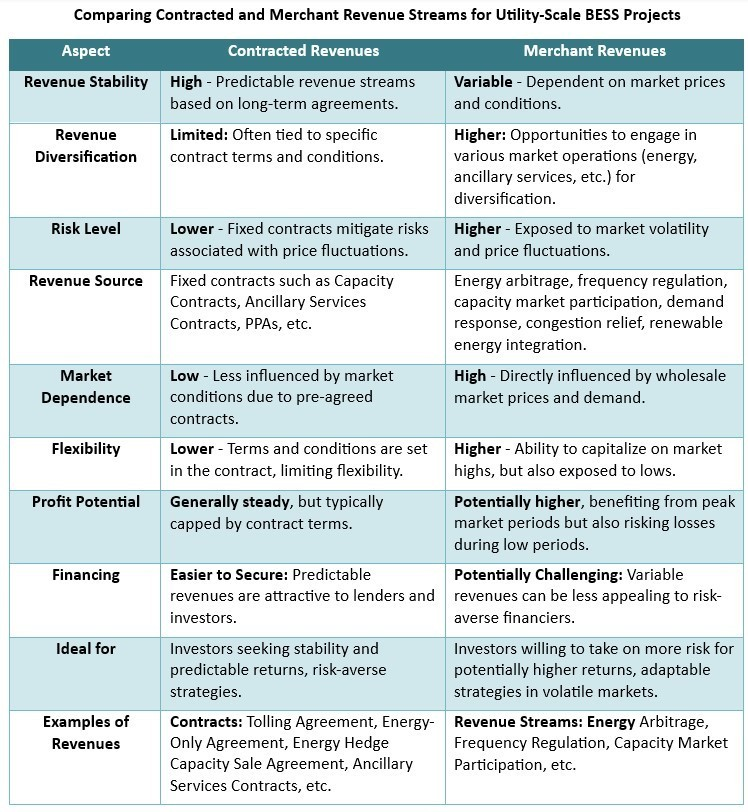
The Revenue Model Spectrum: From Predictability to Upside
The traditional binary between contracted and merchant models has given way to a sophisticated spectrum of revenue architectures. Understanding these structures is essential for making informed deployment decisions.
Tolling agreements represent the most conservative end of the spectrum. In physical tolling arrangements, a third-party operator (the toll off-taker) assumes full operational control and market risk in exchange for paying the asset owner a fixed fee—typically €80,000 to €150,000 annually for a 1 MW system, depending on specification and market conditions. The battery owner receives zero downside risk and correspondingly zero upside potential. While revenue predictability enables straightforward debt financing, the fixed fee structure provides no participation in favorable market conditions.
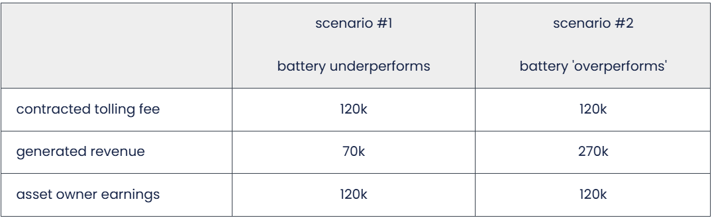
Virtual or synthetic tolling offers a pragmatic middle ground by conditioning payments on energy market prices rather than fixed fees. The asset owner retains modest risk exposure but captures partial upside if realized revenues exceed contractually defined thresholds. This structure bridges the gap between absolute security and pure market participation.
Floor pricing models have emerged as the dominant intermediate structure in 2026. These agreements guarantee a minimum revenue floor (commonly €80,000-€100,000 annually per MW) while enabling the asset owner to retain a revenue share—typically 50-85%—above that floor. This approach solves a critical financing problem: lenders are more comfortable advancing debt against predictable baseline revenues, yet investors retain meaningful upside exposure. Unlike tolling, floor models reward operational excellence and market participation, creating appropriate incentives for optimization.
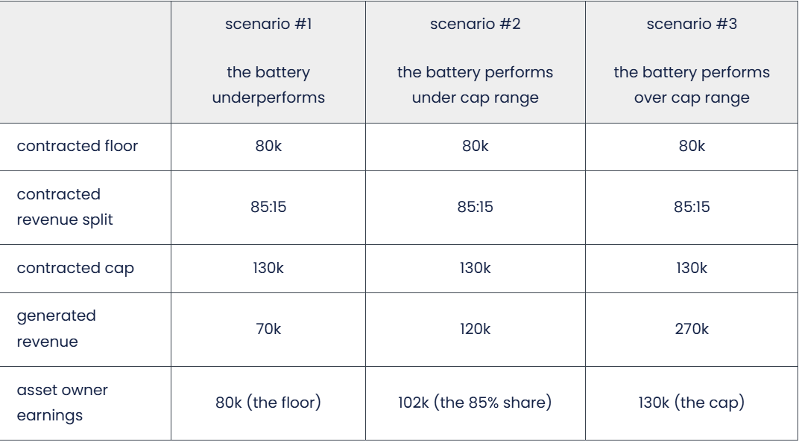
Fully merchant models expose the asset to complete market volatility. Revenue varies based on day-ahead energy arbitrage, ancillary service pricing, and capacity compensation where available. Merchant projects typically employ 90:10 or similar revenue splits favoring the asset owner, reflecting their market exposure. In a scenario where generated revenue ranges from €70,000 to €270,000, the merchant asset owner's earnings would span €63,000 to €243,000—capturing the full upside but bearing the full downside.
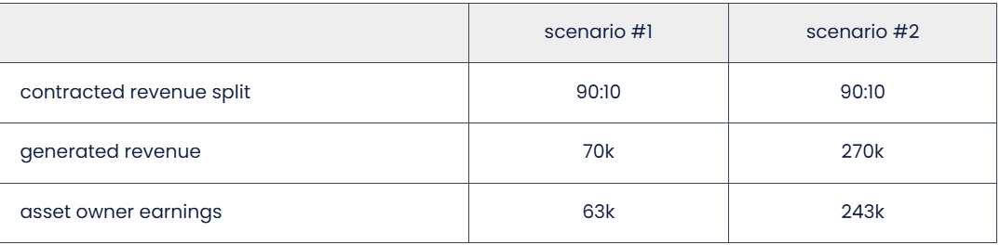
Hybrid structures, increasingly common in 2026, segment battery capacity across multiple revenue models simultaneously. For example, a 10 MW system might allocate 5 MW to a tolling agreement providing baseline cash flow and 5 MW to merchant operations capturing discretionary upside. This approach enables investors to tailor risk exposure to their capital structure and liquidity requirements.
The Bankability Question: Why Revenue Structure Matters
The choice of revenue model fundamentally determines project bankability. Lenders view contracted and floor-based revenue streams as operationally predictable, enabling debt sizing of 60-70% of project cost. Merchant projects typically support only 20-30% debt financing, substantially increasing the cost of capital.
In Australia's National Electricity Market (NEM)—a proxy for mature BESS markets—40% of committed BESS capacity with firm financial commitment through 2028 has long-term off-take contracts. However, for privately financed capacity reaching financial close, the percentage rises dramatically to 75%, underscoring that long-term revenue certainty remains crucial for institutional investment.
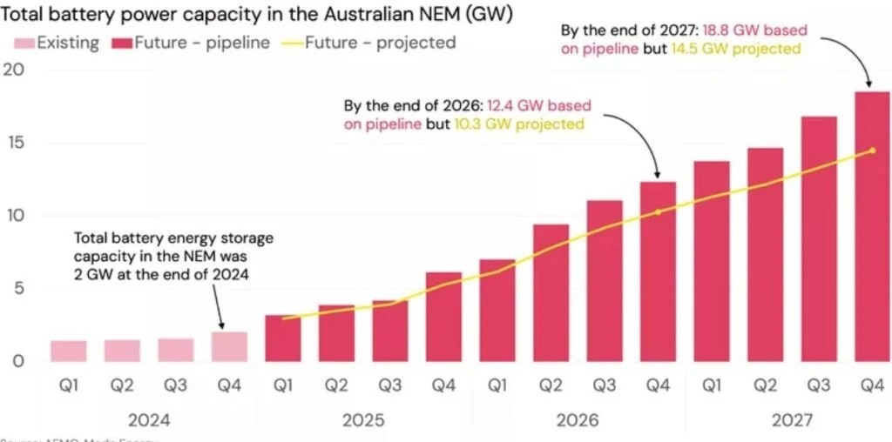
The United States market illustrates financing headwinds facing merchant projects. As of mid-2025, standalone BESS financing splits nearly evenly between traditional tax equity partnerships (49.5%) and direct transfer arrangements (46.5%), with preferred equity structures comprising only 3.8%. By contrast, hybrid solar-plus-storage projects attract 72% tax equity—a substantial advantage reflecting the predictable solar PPA revenues that de-risk the hybrid asset.
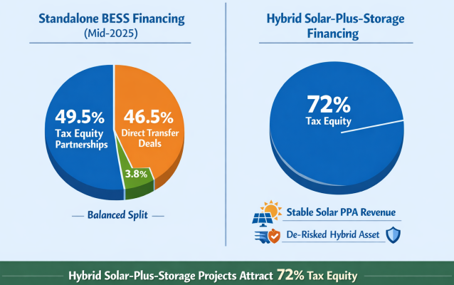
Standalone merchant projects face a structural disadvantage: direct transfer deals to monetize federal tax credits reduce total credit value by approximately 25% compared to equity partnerships incorporating basis step-ups. This efficiency loss effectively raises the cost of capital for merchant projects and extends project timelines.
India's Merchant BESS Inflection Point: 2024-2026
India provides a fascinating case study in merchant BESS maturation. For nearly a decade, the absence of battery cost reductions and limited revenue opportunities made merchant BESS economically unfeasible. This changed decisively in 2024.
Merchant battery storage operations in India's power exchanges—specifically day-ahead and term-ahead markets—achieved profitability for the first time, driven by steep cost reductions and rising price volatility. Potential merchant revenues increased fivefold over the past decade, from INR 0.5 million/MWh in 2015 to INR 2.4 million/MWh in 2025. This fundamental shift reflects both technological maturation and structural grid changes as renewable energy penetration increases.
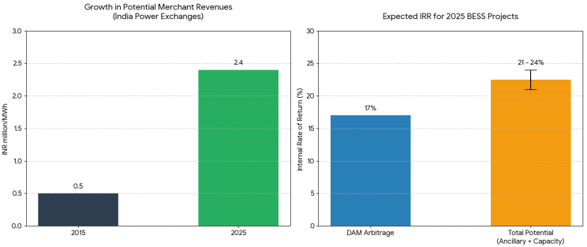
Analysis suggests that new merchant BESS projects commissioned in 2025 could generate internal rates of return of approximately 17% from day-ahead market arbitrage alone, with returns potentially reaching 21-24% when ancillary services and capacity value are included. These return profiles position merchant BESS as compelling grid-scale infrastructure investments.
Juniper Green Energy commissioning of a 60 MWh merchant BESS facility in Bikaner, Rajasthan in December 2025 marks a watershed moment—India's first operational merchant battery storage system achieving commercial operation. The project completed trial operations and received approval from the Northern Regional Load Despatch Centre on December 24, 2025. With an additional 400 MWh under development at Fatehgarh expected to come online in Q1 2026, Juniper's deployment signals developer confidence in merchant economics. The company plans to deploy BESS capacity across all its solar projects connected to the inter-state transmission system, creating an integrated renewable-plus-storage platform.
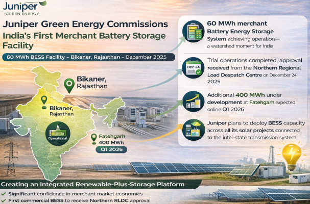
Round-the-Clock (RTC) Contracted Projects: The High-Certainty Alternative
While merchant markets expand, contracted RTC procurement represents the other end of the revenue spectrum. RTC tenders mandate uninterrupted 24/7 power supply, typically through technology combinations of solar, wind, and BESS. Unlike merchant projects exposed to market pricing, RTC contracts provide fixed tariffs—though often below merchant expectations—with guaranteed offtake certainty.
The RAILWAY ENERGY MANAGEMENT COMPANY LIMITED (REMCL) tender awarded 1 GW of RTC capacity at INR 4.35/kWh in November 2025, with ACME Solar emerging as a winning bidder for 130 MW. This tariff level reflects the inherent cost of building dispatchability into renewable projects through energy storage and complementary generation sources. The REMCL tender mandates 75% minimum annual availability for the first three years post-commissioning and 85% thereafter—a stringent operational requirement necessitating optimized technology stacking.
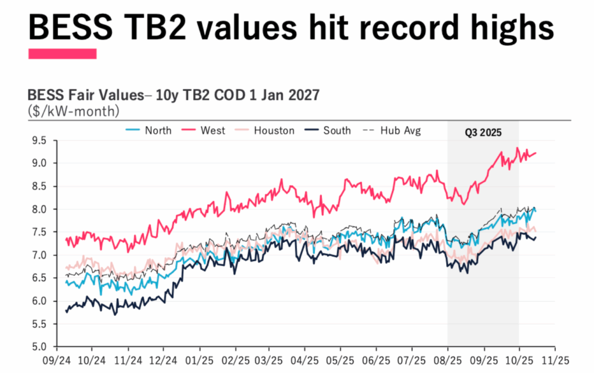
Serentica Renewables signed a landmark 100 MW load-following PPA with the Solar Energy Corporation of India (SECI), representing India's first load-matching contract designed to follow seasonal and hourly demand profiles. Under this agreement, Serentica must fulfill 80% of specified hourly demand, with load obligations ranging from 17 MW during low-demand periods to 100 MW during peak hours. This innovative structure requires sophisticated technology selection and dispatch optimization, combining wind, solar, and BESS to generate over 400 GWh of clean energy annually.
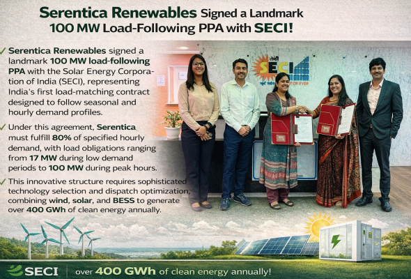
These contracted models sacrifice upside participation but deliver the operational certainty and access to capital that merchant models cannot provide. For developers with construction and operational constraints, the certainty value of RTC contracts often outweighs merchant return potential.
Government Support Strengthening Contracted Viability
India's policy framework has substantially improved the bankability of contracted BESS projects. The Viability Gap Funding (VGF) Scheme, approved in September 2023, provides up to 40% of capital costs as budgetary support, directly addressing the capital intensity challenge that has historically deterred BESS investment. The second VGF tranche, launched in June 2025 through the Power System Development Fund, allocated ₹5,400 crores supporting 30 GWh of storage capacity at a subsidized rate of ₹18 lakhs per MWh.
The Central Electricity Regulatory Commission (CERC) framework establishes clear operational benchmarks: 85% round-trip efficiency, 90% availability, 5% auxiliary consumption, and 12-year depreciation. These normative standards reduce uncertainty deterring lenders by providing objective performance criteria. Importantly, the framework includes an incentive of ₹0.25 per kWh for discharge exceeding normative efficiency, rewarding operational excellence.
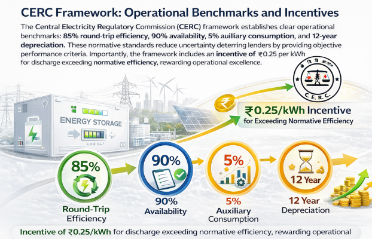
Government-mandated competitive bidding through entities like SECI has driven tariff reductions through market discipline while establishing the transparent procurement processes lenders require for project bankability. The first SECI BESS tender for 500 MW/1,000 MWh achieved competitive tariffs, demonstrating market discipline in a structured environment.
Hybrid Models: Mitigating Revenue Saturation Risk
As BESS deployment scales globally, revenue cannibalisation emerges as a critical structural risk. Wood Mackenzie analysis indicates that in mature markets like Germany, increased BESS competition erodes both energy arbitrage and ancillary service revenues as greater flexibility supply flattens price spreads. Ancillary service revenues—historically spiky and volatile—become an increasingly small component of total revenue stacks. Even day-ahead and intraday market prices face downward pressure from the scale of BESS market influx, potentially undermining long-term project economics.
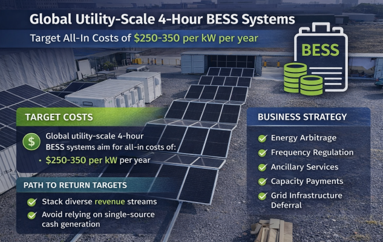
Hybrid revenue models mitigate this saturation risk through diversification. A BESS asset might layer energy arbitrage (day-ahead market sales), ancillary services (frequency response, reserve support), capacity compensation where available, and potentially grid deferral value by avoiding transmission upgrades. Global utility-scale 4-hour BESS systems now target all-in costs of $250-350 per kW per year; achieving target returns on these system costs increasingly requires stacking diverse revenue streams rather than relying on single-source cash generation.
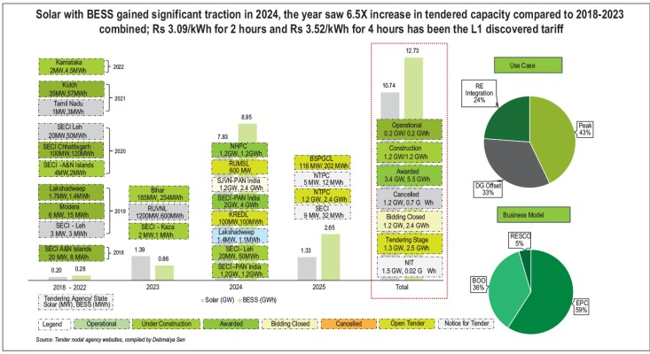
In India, hybrid solar-plus-BESS projects demonstrate superior financing access. The allocation of 2.8 GW standalone BESS alongside 9 GW solar-plus-BESS capacity in the first half of 2025 reflects market preference for hybrid structures that combine solar PPA certainty with storage flexibility. The hybrid asset captures solar generation when available, uses BESS to shift excess midday generation to evening peak periods where it commands higher value, and provides grid services during both solar and non-solar hours.
Regional Market Divergence in 2026
The global BESS landscape reveals substantial regional variation in optimal revenue models. The United States experienced significant margin compression in 2025, with developers canceling 79 GW of planned capacity as revenues declined from $192/kW to $55/kW while battery costs increased from $100/kWh to $130/kWh. This dynamic has shifted project economics away from merchant models, driving developer interest in contracted structures and hybrid solar-plus-storage configurations where predictable solar PPAs provide revenue stability.
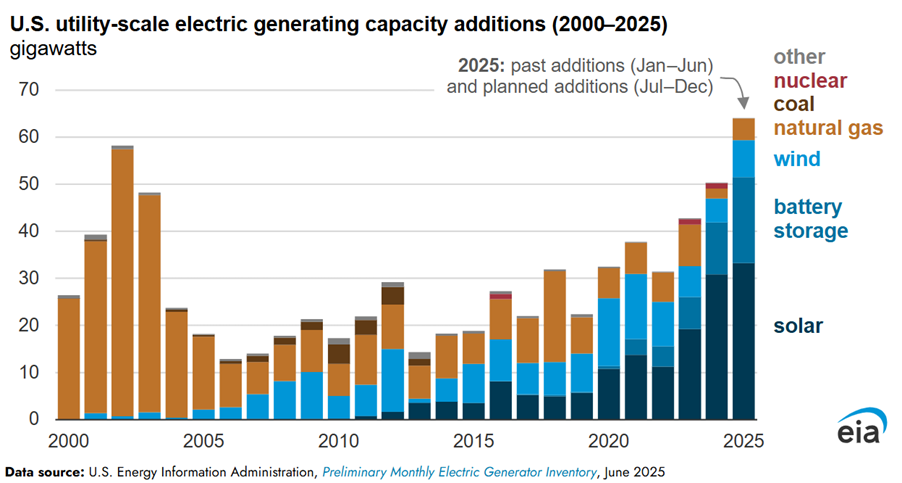
Europe, particularly Germany, is prioritizing grid code compliance and frequency response services as renewable penetration reaches levels challenging synchronous generation's ability to maintain system inertia. European BESS projects increasingly layer synthetic inertia provision and fast frequency response capabilities into their commercial models, commands premium pricing from grid operators seeking stability services.
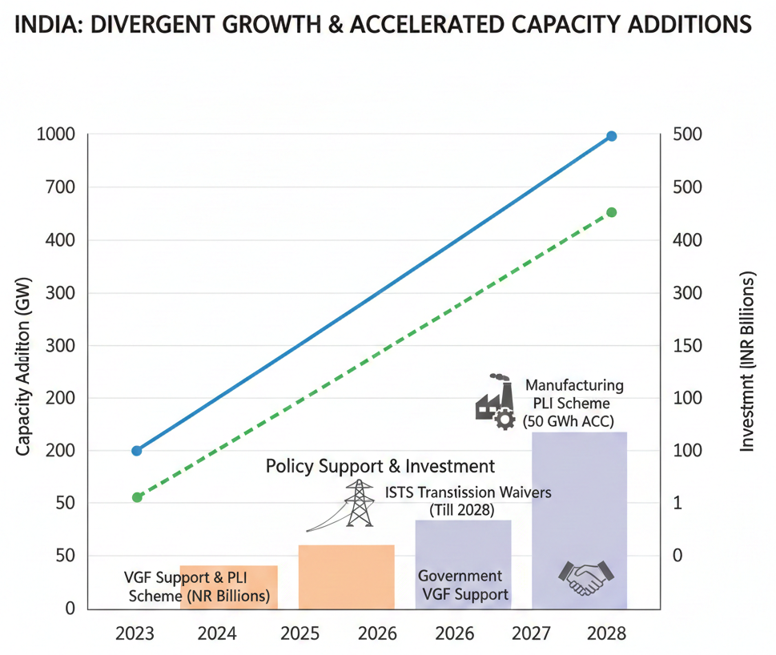
India remains distinctive as a growth market where both contracted RTC procurement and newly profitable merchant opportunities drive significant capacity additions. The government's VGF support, manufacturing PLI scheme targeting 50 GWh ACC production, and ISTS transmission charge waivers through 2028 create policy conditions favoring rapid deployment across both revenue model categories.
Conclusion: 2026 as Market Maturation Inflection
The BESS market in 2026 is transitioning from early-stage technology deployment to mature infrastructure with sophisticated, market-specific revenue structures. The strategic advantage belongs to developers and investors capable of matching revenue models to specific market dynamics, asset characteristics, and investor requirements.
Merchant BESS viability in India represents a genuine structural shift enabling profitable uncontracted deployment; this opportunity remains limited to high-volatility markets with strong renewable penetration. Contracted and floor-based models remain essential for institutional-scale capital mobilization and utility system integration. Hybrid structures increasingly dominate as developers recognize that revenue diversification mitigates cannibalisation risks inherent in saturating BESS markets.